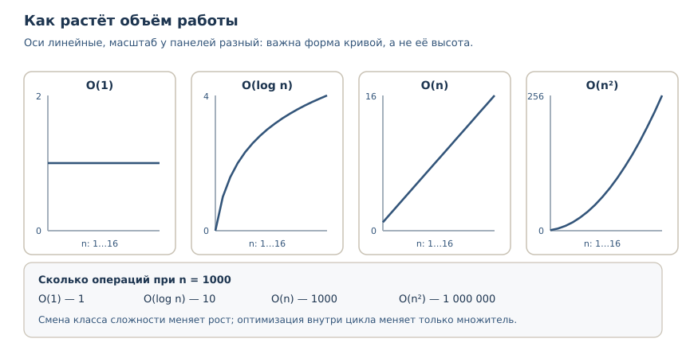
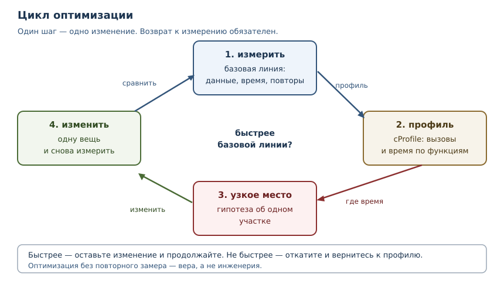

Производительность и профилирование
Как измерять, где узкие места, какие оптимизации оправданы.
В этой главе
Программа работает правильно, но слишком медленно. Первое желание — переписать «подозрительное» место, второе — добавить кэш, третье — заменить цикл на включение. Обычно все три шага делают код сложнее, а время работы не меняют: настоящая причина в другом участке. Эта глава о том, как перестать угадывать. Вы научитесь измерять, строить профиль, находить узкое место и проверять, что изменение действительно помогло.
40.1 Что вы сможете после этой главы
- отличать измерение от догадки и проводить бенчмарк, которому можно верить;
- оценивать алгоритмическую сложность и замечать, когда дело не в коде, а в самом алгоритме;
- снимать профиль через
cProfileи читать его без иллюзий; - находить узкое место и проверять результат оптимизации повторным замером;
- применять мемоизацию и понимать, когда она вредит.
40.2 Сначала измерение, потом изменение
Дональд Кнут писал, что преждевременная оптимизация — корень всех зол. Смысл не в том, что оптимизировать не нужно, а в том, что нельзя оптимизировать то, что вы не измерили. Интуиция о скорости кода систематически ошибается: дорогими оказываются не те строки, которые выглядят сложными, а те, которые выполняются миллионы раз, или те, что прячут за собой ожидание.
Есть три величины, которые легко перепутать.
| Величина | Что показывает | Когда важна |
|---|---|---|
| время работы (wall time) | сколько прошло по часам | для пользователя и таймаутов |
| процессорное время | сколько процессор работал | для вычислений |
| число операций | сколько работы сделал алгоритм | для оценки сложности |
Если программа ждёт сеть, время работы большое, а процессорное — маленькое. Ускорять вычисления в такой программе бессмысленно. И наоборот: если время работы растёт квадратично от размера данных, никакая микрооптимизация цикла не спасёт.
Бенчмарк — воспроизводимое измерение производительности по строго заданному сценарию: те же данные, те же условия, несколько повторов. Измерение «один раз в интерактивной сессии» — не бенчмарк: на результат влияют прогрев, фоновые процессы и состояние кэшей.
Для коротких фрагментов в стандартной библиотеке есть timeit — модуль и
одноимённая команда, которые многократно запускают код и возвращают лучшее
время. Многократный запуск нужен, чтобы шум измерения не перекрыл разницу.
Вот типичный сеанс; числа на вашей машине будут другими, важны порядки
величин:
$ python3 -m timeit -s "data = list(range(1000))" "999 in data"
100000 loops, best of 5: 2.89 usec per loop
$ python3 -m timeit -s "data = set(range(1000))" "999 in data"
10000000 loops, best of 5: 21.7 nsec per loop
Разница в сто с лишним раз объясняется не тем, что «множества быстрее списков», а тем, что у них разная сложность поиска: список просматривает элементы по одному, множество вычисляет хеш и обращается к таблице.
Углубление: как измерять, не обманывая себя
Пять правил, без которых бенчмарк врёт.
- Измеряйте то, что оптимизируете. Замер, включающий подготовку данных, покажет разницу в подготовке, а не в работе.
- Повторяйте. Один замер — это шум. Команда
python -m timeitпо умолчанию делает пять раундов и печатает лучший: такой результат меньше всего искажён помехами. В коде для этого вызываютtimeit.repeatи берутmin, потому что самtimeit.timeitвыполняет один раунд. - Не смешивайте ожидание и вычисления. Ввод-вывод измеряют отдельно от расчётов.
- Проверяйте одинаковость условий. Разные данные, разный прогрев, включённый отладчик или профилировщик меняют результат.
- Сравнивайте с базовой линией. Оптимизация измеряется как отношение: было столько, стало столько, при тех же входных данных.
40.3 Алгоритмическая сложность
Алгоритмическая сложность — оценка того, как растёт объём работы
алгоритма при увеличении размера входа. Её записывают в O-нотации: O(n)
означает, что число операций растёт пропорционально n, O(n ** 2) — что
оно растёт как квадрат n. Константы и слагаемые низшего порядка при этом
отбрасывают: они важны на малых размерах, но проигрывают росту.
Посмотрите на разницу между линейным и двоичным поиском. Оба находят элемент в отсортированном списке, но один просматривает элементы подряд, а второй каждый раз отбрасывает половину.
def linear_search(items, target):
steps = 0
for index, item in enumerate(items):
steps += 1
if item == target:
return index, steps
return -1, steps
def binary_search(items, target):
low, high, steps = 0, len(items) - 1, 0
while low <= high:
steps += 1
middle = (low + high) // 2
if items[middle] == target:
return middle, steps
if items[middle] < target:
low = middle + 1
else:
high = middle - 1
return -1, steps
data = list(range(1000))
print("линейный поиск:", linear_search(data, 999))
print("двоичный поиск:", binary_search(data, 999))
линейный поиск: (999, 1000)
двоичный поиск: (999, 10)
Линейный поиск сделал 1000 шагов, двоичный — 10. Десять — это примерно
log2(1000): каждый шаг уменьшает область поиска вдвое. На тысяче элементов
разница примерно в сто раз (1000 шагов против 10), а на миллионе — уже
примерно в пятьдесят тысяч раз (10**6 против 20): O(n) против
O(log n).

Частые классы сложности, от лучшего к худшему:
| Сложность | Пример операции | Рост при n от 1000 до 2000 |
|---|---|---|
O(1) |
доступ по индексу, поиск в множестве | не меняется |
O(log n) |
двоичный поиск, bisect |
+1 шаг |
O(n) |
обход списка, суммирование | вдвое больше работы |
O(n log n) |
сортировка слиянием, sorted |
чуть больше, чем вдвое |
O(n ** 2) |
вложенный цикл по всем парам | вчетверо больше работы |
Из таблицы следует практический вывод: смена алгоритма с O(n ** 2) на
O(n log n) даёт больше, чем любая оптимизация констант внутри цикла. Зато
на малых данных, где n равно десяти, квадратичный алгоритм вполне может
оказаться быстрее: у него меньше накладных расходов. Сложность описывает
рост, а не абсолютную скорость.
Углубление: сложность в среднем и в худшем случае
Поиск в множестве и словаре в среднем требует O(1), но в худшем случае при
плохом хешировании вырождается в O(n). Для встроенных типов с нормальными
хешами это редкость, но для своих классов, у которых __hash__ возвращает
константу, — реальность. Поэтому при оценке производительности уточняйте, о
каком случае идёт речь.
40.4 Профилирование
Профилирование — измерение того, сколько времени и вызовов приходится на каждую функцию программы. Профиль отвечает на вопрос «где именно уходит время», а не «почему программа медленная вообще».
Стандартная библиотека даёт два инструмента: cProfile и profile.
cProfile — обёртка над профилировщиком _lsprof, написанным на C, поэтому
накладные расходы у него ниже; для повседневной работы хватает его. profile —
реализация на чистом Python: медленнее, зато её проще читать и расширять. Оба
строят детерминированный профиль: подсчёт по вызовам, а не выборка по
таймеру.
import cProfile
def fib(n):
return n if n < 2 else fib(n - 1) + fib(n - 2)
def build(n):
return [fib(i) for i in range(n)]
profiler = cProfile.Profile()
profiler.enable()
build(10)
profiler.disable()
rows = []
for entry in profiler.getstats():
if isinstance(entry.code, str):
continue
rows.append((entry.code.co_name, entry.callcount))
rows.sort()
for name, count in rows:
print(name, count)
build 1
fib 276
Здесь нет случайности: профиль показывает точные счётчики. build вызвана
один раз, fib — 276 раз. Именно такие числа, а не время, позволяют увидеть
структуру работы. Время в профиле тоже есть, но его не стоит печатать в
примере: оно зависит от машины.
pstats форматирует профиль в таблицу. Её столбцы: число вызовов, суммарное
время в функции (tottime), время с учётом вызываемых функций (cumtime) и
адрес определения функции.
$ python3 -m cProfile -s cumulative fib.py
280 function calls (14 primitive calls) in 0.001 seconds
Ordered by: cumulative time
ncalls tottime percall cumtime percall filename:lineno(function)
1 0.000 0.000 0.001 0.001 fib.py:6(build)
276/10 0.000 0.000 0.001 0.000 fib.py:3(fib)
Запись 276/10 означает: функция fib вызвана 276 раз, из них 10 — не
рекурсивно. Большое число вызовов маленькой функции — сигнал: алгоритм
пересчитывает одно и то же. Здесь напрашивается мемоизация.
Как читать профиль
- Смотрите на
cumtime, чтобы найти цепочку — время, включающее вызванные функции. - Смотрите на
tottime, чтобы найти точку — время, потраченное в самой функции, без вызовов. - Смотрите на
ncalls— часто проблема не в одной медленной операции, а в миллионе быстрых. - Не оптимизируйте функции, которые не попали в верх таблицы. 80 % времени обычно приносит небольшая часть кода.
40.5 Узкое место
Узкое место — участок, который ограничивает общую производительность: пока он не ускорен, оптимизация остального не даёт заметного эффекта. Это следует из закона Амдала: если на участок приходится половина времени, максимальное ускорение всей программы от его устранения — вдвое, сколько бы остального вы ни оптимизировали.

Работа над производительностью — цикл, а не одноразовое действие:
- Измерить. Зафиксировать базовую линию: данные, сценарий, время.
- Профилировать. Понять, какие функции потребляют время и сколько раз вызываются.
- Сформулировать гипотезу. «Время уходит на повторные вычисления
fib» — конкретное утверждение, которое можно проверить. - Изменить одну вещь. Если менять сразу несколько, невозможно понять, что помогло, а что навредило.
- Измерить снова. Сравнить с базовой линией на тех же данных.
Шаг 5 пропускают чаще всего, и именно поэтому многие «оптимизации» живут в коде годами, не ускоряя ничего.
40.6 Мемоизация
Мемоизация — кэширование результатов функции по её аргументам: если функцию вызвали с теми же аргументами повторно, результат берётся из кэша, а не вычисляется заново. Это обмен памяти на время, и он оправдан, если функция чистая — при одинаковых аргументах всегда возвращает одно и то же — и вызывается повторно.
В стандартной библиотеке для этого есть functools.lru_cache и его короткая
форма functools.cache (Python 3.9+).
from functools import lru_cache
calls = 0
def fib_slow(n):
global calls
calls += 1
return n if n < 2 else fib_slow(n - 1) + fib_slow(n - 2)
print("без кэша:", fib_slow(15), "вызовов:", calls)
@lru_cache(maxsize=None)
def fib_fast(n):
return n if n < 2 else fib_fast(n - 1) + fib_fast(n - 2)
print("с кэшем:", fib_fast(15))
print(fib_fast.cache_info())
без кэша: 610 вызовов: 1973
с кэшем: 610
CacheInfo(hits=13, misses=16, maxsize=None, currsize=16)
Без кэша fib(15) вызвана 1973 раза, потому что одни и те же значения
пересчитываются заново. С кэшем достаточно 16 вычислений: остальные 13
обращений попали в кэш. cache_info показывает попадания (hits),
промахи (misses) и текущий размер кэша (currsize). Это готовый счётчик
эффективности: если попаданий почти нет, кэш только тратит память.
Углубление: у кэша есть цена
lru_cache хранит результаты, пока не достигнут maxsize; при переполнении
вытесняется давно не использованная запись. Видно, как это работает, если
поставить маленький размер.
from functools import lru_cache
@lru_cache(maxsize=2)
def square(number):
print("вычисляем", number)
return number * number
print(square(2))
print(square(3))
print(square(2))
print(square(4))
print(square(2))
print(square.cache_info())
вычисляем 2
4
вычисляем 3
9
4
вычисляем 4
16
4
CacheInfo(hits=2, misses=3, maxsize=2, currsize=2)
Пять вызовов, три вычисления, два попадания. Четвёртый вызов вытеснил запись
для 3, поэтому последний вызов square(2) всё ещё попадает в кэш, а
square(3) пришлось бы считать заново. Размер кэша — компромисс между
памятью и долей попаданий.
Три ограничения мемоизации, о которых забывают:
- Аргументы должны быть хешируемыми. Список или словарь в аргументах
даст
TypeError, потому что кэш устроен как словарь. - Функция должна быть чистой. Если результат зависит от внешнего состояния, кэш вернёт устаревшее значение.
- Кэш занимает память. Для функции с миллионом разных аргументов
maxsize=None— это утечка памяти, замаскированная оптимизацией.
from functools import lru_cache
@lru_cache(maxsize=None)
def total(items):
return sum(items)
print(total([1, 2, 3]))
TypeError: unhashable type: 'list'
С кортежем тот же код работает: кортеж хешируем, в отличие от списка.
from functools import lru_cache
@lru_cache(maxsize=None)
def total(items):
return sum(items)
print(total((1, 2, 3)))
6
40.7 Оптимизации, которые стоит знать
Микрооптимизации редко решают судьбу программы, но несколько приёмов полезно узнавать в профиле.
| Приём | Почему работает | Когда не помогает |
|---|---|---|
| множество или словарь вместо списка для проверки вхождения | поиск O(1) вместо O(n) |
если элементов мало и список уже построен |
str.join вместо += в цикле |
одна аллокация вместо многих | если строк две |
списковое включение вместо append в цикле |
меньше накладных расходов Python | если внутри сложная логика |
| локальная переменная вместо глобальной | короче поиск имени | если функция вызывается один раз |
| вынести повторное вычисление из цикла | не делать одну и ту же работу | если вычисление уже кэшировано |
Проверять каждый приём нужно замером: выигрыш зависит от версии Python,
размера данных и того, где находится узкое место. Списковое включение из
главы 23 обычно быстрее цикла с append, но не в сто раз — и это не повод
переписывать весь код.
Углубление: что показывает perf_counter
Для грубого замера в коде есть time.perf_counter — счётчик с наибольшим
доступным разрешением. Печатать его значение бессмысленно: оно зависит от
машины и момента запуска. Печатать имеет смысл только проверяемое
утверждение о результате измерения.
from time import perf_counter
def work(limit):
return sum(range(limit))
start = perf_counter()
value = work(100_000)
elapsed = perf_counter() - start
print("результат:", value)
print("измерение неотрицательно:", elapsed >= 0)
результат: 4999950000
измерение неотрицательно: True
В учебном примере мы печатаем только инвариант — измеренное время не может быть отрицательным. В реальном бенчмарке время печатают, но всегда вместе с условиями: размер данных, число повторов, версия Python.
40.8 Типичные ошибки
- Оптимизировать без замера. «Мне кажется, это место медленное» — не основание для изменения. Сначала профиль.
- Мерить один раз. Один замер ловит шум, а не свойство программы.
- Включать подготовку в замер. Создание данных в измеряемом блоке покажет время создания, а не работы.
- Путать сложность с константой. Быстрый
O(n ** 2)на десяти элементах не значит, что он останется быстрым на миллионе. - Кэшировать всё. Мемоизация функции с побочными эффектами или большим разнообразием аргументов вредит: память растёт, попаданий нет.
- Оптимизировать холодный код. Функция, которая вызывается один раз при запуске, не влияет на общую скорость.
- Забыть про повторный замер. Без сравнения с базовой линией «оптимизация» остаётся верой.
40.9 Упражнения
1. Замер или догадка
Возьмите любую функцию из своих прошлых упражнений и ответьте письменно: какой сценарий вы измеряете, какие данные подаёте, сколько повторов делаете и с какой базовой линией сравниваете. Объясните, почему замер «один раз, в интерактивной сессии» не годится.
2. Сложность на счётчиках
Напишите две функции поиска максимума: одну с сортировкой и взятием последнего элемента, вторую с одним проходом по списку. Обе возвращают найденный максимум и число выполненных шагов. Сравните шаги на списке из 1000 элементов и объясните результат в терминах сложности.
3. Исправление бенчмарка
Бенчмарк показывает, что «функция стала быстрее», хотя код не менялся:
start = time.perf_counter()
data = build_data(100000)
result = process(data)
print(time.perf_counter() - start)
Что измеряет этот код на самом деле? Перепишите замер так, чтобы он измерял
только process.
4. Чтение профиля
Профиль показывает: функция parse вызвана 2 раза, validate — 500 000 раз,
render — 2 раза. Суммарное время parse и render — 0.4 с, validate —
0.1 с. Какой участок стоит оптимизировать в первую очередь и почему одного
tottime для ответа недостаточно?
5. Мемоизация своими руками
Реализуйте мемоизацию без functools: функция memo_fib(n) хранит
вычисленные значения в словаре и возвращает их при повторном вызове.
Выведите число фактических вычислений для n = 15.
6. Хешируемость аргументов
Функция кэшируется через lru_cache, но при вызове со списком падает с
TypeError. Объясните причину и предложите два исправления: преобразование
аргумента и отказ от кэша для этого случая.
7. Кэш с ограничением
Создайте кэширующую функцию с maxsize=3 и вызовите её с пятью разными
аргументами, затем повторите первые два вызова. Выведите cache_info и
объясните, сколько было попаданий и почему.
8. Узкое место
Программа тратит 0.6 с на чтение файла, 0.3 с на разбор данных и 0.1 с на вывод. Вы вдвое ускорили разбор. Насколько ускорится программа целиком? Ответьте числом и объясните через закон Амдала.
9. Сложность в среднем
Объясните, почему поиск в множестве в среднем O(1), но может деградировать
до O(n). Приведите пример класса, у которого это произойдёт, и напишите
такой класс, проверив, что hash() у всех экземпляров одинаков, а число
сравнений при вставке растёт квадратично.
10. Мини-задача: ускорение отчёта
Дана функция, которая для списка чисел строит отчёт: сумму, минимум, максимум и количество уникальных значений. Напишите её наивную версию (несколько проходов по списку, проверка уникальности через список) и оптимизированную (один проход, множество). Сравните число операций на списке из 2000 чисел и объясните, какой алгоритм асимптотически лучше.
40.10 Проверка понимания
- Чем бенчмарк отличается от однократного замера?
- Почему
python -m timeitделает несколько повторов и берёт лучшее время? - Что означает запись
O(n log n)и почему она лучшеO(n ** 2)? - Что показывает
tottime, а чтоcumtime? - Как по профилю понять, что проблема в количестве вызовов, а не в одной медленной операции?
- Что такое узкое место и почему без него оптимизация остального бесполезна?
- В каких случаях мемоизация ухудшает программу?
- Почему аргументы кэшируемой функции должны быть хешируемыми?
40.11 Связи
Подробный разбор O-нотации и выбора структур данных — в главе 52.
Оценка алгоритмов вводится здесь впервые. Генераторы, включения и декораторы
из глав 21–23 нужны потому, что lru_cache — декоратор, а кэш устроен как
словарь из главы 17. Модель конкурентности из главы 38 и главы 39
объясняет, почему ожидание и вычисления измеряют по-разному.
Дальше — безопасность приложений: производительность важна, но не ценой уязвимостей. Там мы разберём, как не открыть дверь, ускоряя код.